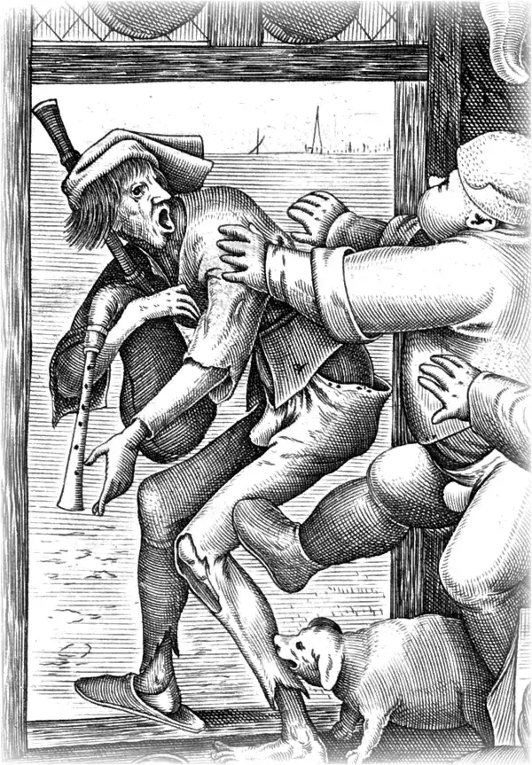

Cette page n’existe pas.
Comme le joueur de cornemuse de la gravure, vous voilà à la porte. Rentrez par ici :
« Hors d’ici, Maigre-dos […], car c’est Grasse-Cuisine. »
Légende de La Cuisine grasse, gravure d’après Bruegel, 1563.

Comme le joueur de cornemuse de la gravure, vous voilà à la porte. Rentrez par ici :
« Hors d’ici, Maigre-dos […], car c’est Grasse-Cuisine. »
Légende de La Cuisine grasse, gravure d’après Bruegel, 1563.